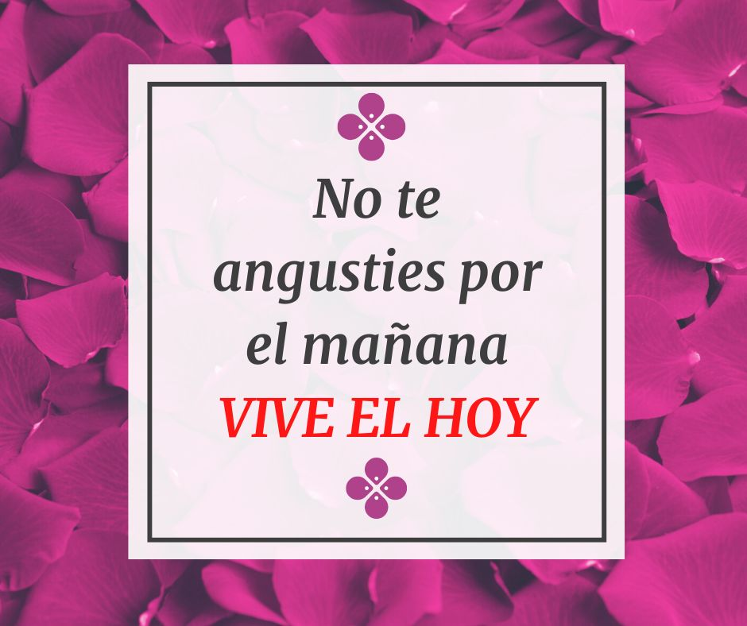

En España el suicidio es la segunda causa de muerte entre los jóvenes de 19 a 25 años. En este periodo la universidad o el trabajo pueden resultar muy duros y
tenemos que estar atentos a las señales que pueden mostrar estrés o ansiedad como la astenia o el aislamiento, que pueden servirnos de aviso hacia nosotros mismos
o hacia otros compañeros. El estrés y la ansiedad que provocan algunas situaciones puede ser enorme y esa persona podría ser empujada al suicidio como única salida.
Esto podría haberse evitado si las organizaciones dedicadas a esto, como el teléfono de la esperanza, tuvieran más publicidad ya que la mayoría de la gente no sabe que existen.
El suicidio es un fenómeno que ha adquirido especial relevancia en los últimos años, con el aumento exponencial de los casos. Ahora, un nuevo informe de la Organización Mundial
de la Salud (OMS) asegura que se produce un nuevo suicidio en el mundo cada 40 segundos.
¿Y QUÉ TENGO QUE HACER?
Hoy en día todos los seres humanos vivimos angustiados en todo lo que debemos hacer mañana, dentro de unos días,
dentro de unos meses incluso dentro de un año,
cuando realmente debemos aprender UN DÍA A LA VEZ.
¿Y cómo hacemos esto?
Solo debes pensar en el hoy dejar el ayer en el pasado y el mañana en el futuro enfocar
tu mente,
tú ojos y tu corazón solo en el hoy.